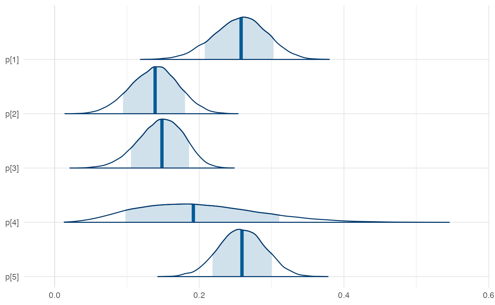

hw08
BR 13.7
Plans change. Hotel room bookings get canceled. In the next exercises, you’ll explore whether hotel cancellations might be predicted based upon the circumstances of a reservation. Throughout, utilize weakly informative priors and the hotel_bookings data in the {bayesrules} package. Your task is to predict is_cancelled (\(Y\), whether or not the booking was cancelled) based on the following predictors:
-
lead_time: number of days between the booking and scheduled arrival (\(X_1\)) -
previous_cancellations: number of previous times the guest has cancelled a booking (\(X_2\)) -
is_repeated_guest: whether or not the booking guest is a repeat customer at the hotel (\(X_3\)) -
average_daily_rate: the average per day cost of the hotel (\(X_4\))
- Using formal mathematical notation, specify an appropriate Bayesian regression model of \(Y\) by predictors \(X_1, X_2, X_3, X_4\)
- Simulate the posterior model of the regression parameters \((\beta_0, \beta_1, ..., \beta_4)\).
- Construct trace plots, density plots, and a
pp_check()of the chain output. - Report the posterior median model of hotel cancellations on each of the log(odds), odds, and probability scales.
- Construct 80% posterior credible intervals for your model coefficients. Interpret those for \(\beta_2\) and \(\beta_3\) on the odds scale.
- Among the four predictors, which are significantly associated with hotel cancellations, both statistically and meaningfully? Explain.
BR 13.9
A guest that is new to a hotel and has only canceled a booking 1 time before, has booked a $100 per day hotel room 30 days in advance.
- Simulate, plot, and discuss the posterior predictive model of \(Y\), whether or not the guest will cancel this booking.s
- Come up with the features of another fictitious booking that’s more likely to be canceled than the booking in part a. Support your claim by simulating, plotting, and comparing this booking’s posterior predictive model of\(Y\) to that in part a.
BR 13.8
- How good is your model at anticipating whether a hotel booking will be canceled? Evaluate the classification accuracy using both the in-sample and cross-validation approaches, along with a 0.5 probability cut-off.
- Are the cross-validated and in-sample assessments of classification accuracy similar? Explain why this makes sense in the context of this analysis.
- Interpret the cross-validated overall accuracy, sensitivity, and specificity measures in the context of this analysis.
- Thinking like a hotel booking agent, you’d like to increase the sensitivity of your classifications to 0.75. Identify a probability cut-off that you could use to achieve this level while maintaining the highest possible specificity.
Social conformity model
The code chunk below fits the strategy model that we discussed in class on Wednesday. Start by running the code and make sure you understand each piece. Then, answer the following questions.
This model takes a long time to run! Feel free to run your models locally, and then save any images you want to include. Then add
#| eval: falseto your chunk when rendering and include your images separately. This will greatly speed up the time it takes to render your final PDF file. I’ve included an example here.